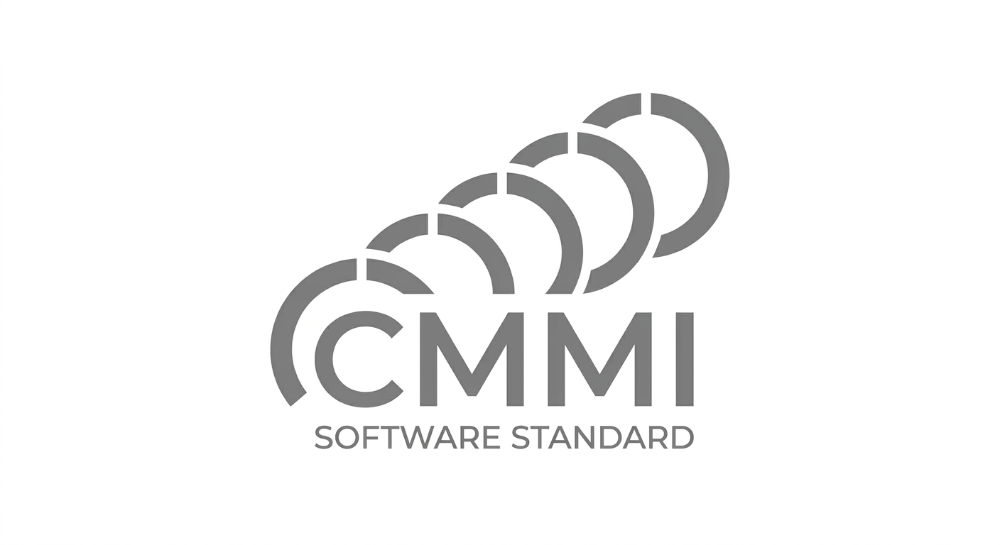
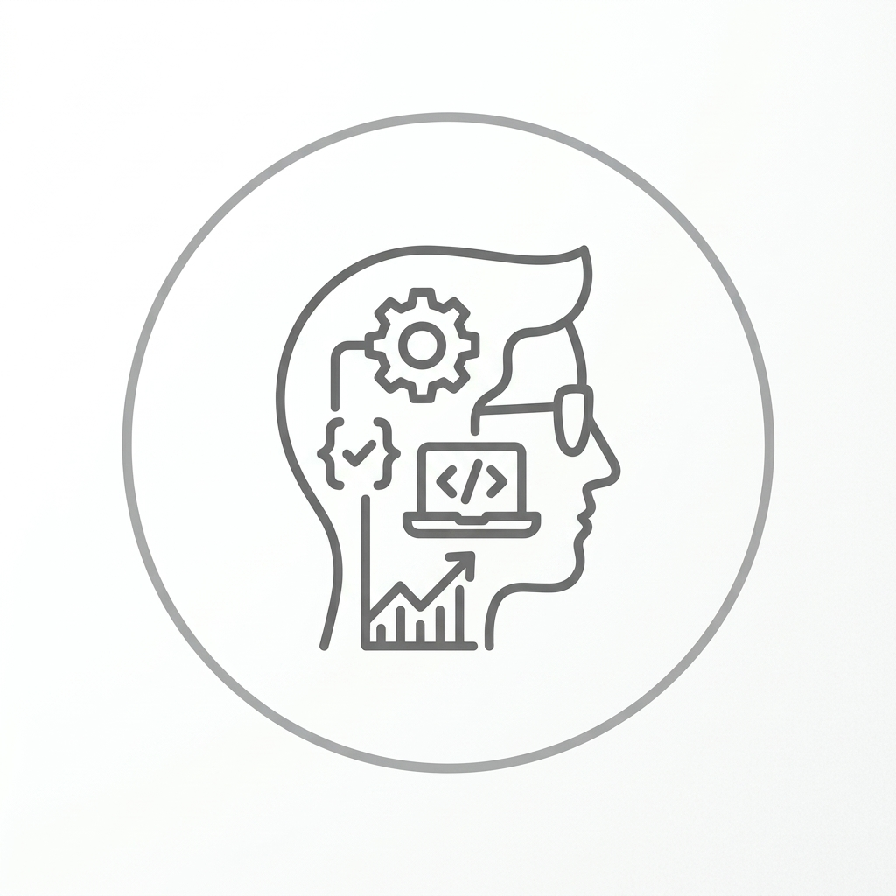

Personal Software Process (PSP)
Marco de trabajo para que los ingenieros gestionen su propio desempeño, controlen defectos y mejoren su productividad individual (niveles del 0 al 3).
Leer más
Marcos de trabajo diseñados para guiar a ingenieros y equipos hacia el desarrollo de software de clase mundial con cero defectos.



Marco de trabajo para que los ingenieros gestionen su propio desempeño, controlen defectos y mejoren su productividad individual (niveles del 0 al 3).
Leer más
Modelo que combina los principios del PSP con el trabajo en equipo de alto rendimiento para entregar proyectos a tiempo y dentro del presupuesto.
Leer másAlineación organizacional orientada a la madurez de procesos, alta calidad y cumplimiento de plazos previstos.
Leer más
Enfoque individual, duración de 64 horas, costo de $23,916 MXN.

Enfoque en equipos de alto rendimiento, duración de 64 horas, costo de $263,916 MXN.

Dirigido a profesionales de TI, sector público, docentes y estudiantes universitarios (mínimo 6° semestre).
Consulta nuestro calendario para las próximas convocatorias nacionales e internacionales.
 From our blog
From our blog
El PSP ayuda a los ingenieros a mejorar su proceso personal de desarrollo...
Leer más...
Conoce cómo se distribuyen las responsabilidades en un equipo de alto rendimiento...
Leer más... Our News feed
Our News feed@QualitySoft: Convocatoria abierta para la certificación PSP en el sector académico. ¡Inscríbete ahora! #PSP #CalidadSoftware
27/10/2026 - 10:00 AM@QualitySoft: Nuevo taller de TSP para equipos de desarrollo gubernamentales. Mejora tu productividad hoy mismo.
26/10/2026 - 02:30 PM@QualitySoft: Alineación organizacional con CMMI: el camino hacia la madurez de procesos clase mundial.
25/10/2026 - 11:15 AM